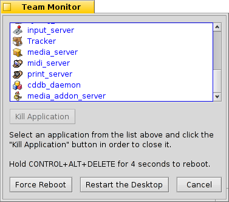

Team Monitor
Med knapparna CTRL ALT DEL åkallas Team Monitor, som listar alla program som köras för närvarande.

Program som lanseras av systemet är blå, och de som startas av användaren är svarta.
Användningsprogram som inte svarar på inkommande anrop har röda marker. Det betyder ofta att den är kraschad. Du kan försöka sluta programmet genom att välja det och klicka på knappen (eller trycka på DEL eller Q). Om det inte fungerar försöker du istället trycka på knappen (eller trycka på SKIFT DEL eller K) istället.
Du kan kalla upp en Terminal med knappen (eller trycka på OPT ALT T).
Sista chansen! Om all håp är avsluten, kan du trycka på knappen (eller hålla ned knapparna CTRL ALT DEL i 4 sekunder).